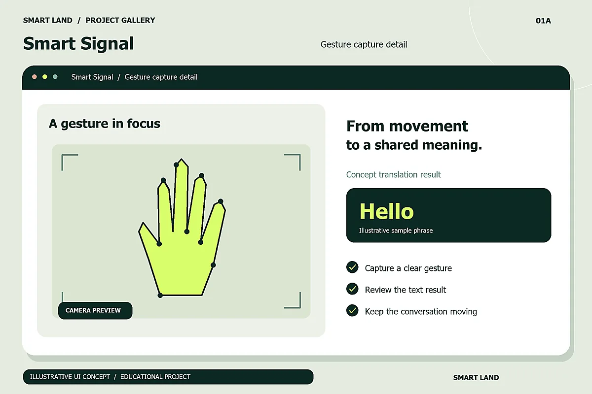
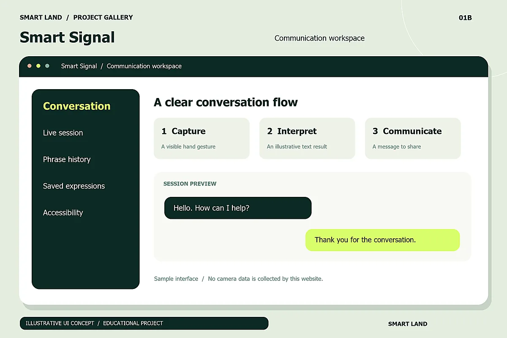

البداية
التحدّي
عندما لا يعرف أحد طرفَي الحوار لغة الإشارة، تصبح المحادثات اليومية أكثر صعوبة. الحاجة هنا إلى أداة مساعدة تجعل تبادل المعنى أكثر إتاحة، مع احترام تنوّع المستخدمين وسياق التواصل.
التواصل والإتاحة / ذكاء اصطناعي
حين تصبح التقنية جسراً للتواصل.
تصوّر لتطبيق يترجم لغة الإشارة، ويقرّب المعنى بين أشخاص لا يتشاركون اللغة نفسها.
 الإتاحة أولاً
الإتاحة أولاً01 / ما وراء التجربة
قراءة تصميمية للفكرة الواردة في موجز المشروع،
من المشكلة إلى الأثر المستهدف.
البداية
عندما لا يعرف أحد طرفَي الحوار لغة الإشارة، تصبح المحادثات اليومية أكثر صعوبة. الحاجة هنا إلى أداة مساعدة تجعل تبادل المعنى أكثر إتاحة، مع احترام تنوّع المستخدمين وسياق التواصل.
المسار
ينطلق Smart Signal من فكرة ترجمة لغة الإشارة الواردة في موجز المشروع. يعرض هذا التصوّر مساراً واضحاً يبدأ بالإشارة، ثم مراجعة المعنى المقترح، وصولاً إلى مشاركة النص الناتج.
الغاية
المساهمة في تقريب المعنى وتقليل حواجز التواصل في المواقف اليومية. هذا أثر نوعي مستهدف ضمن التصوّر التعليمي، وليس نتيجة تجربة أو دقة ترجمة مقاسة.
02 / ملامح التصوّر
مقترحات تصميمية توضيحية؛
ليست توثيقاً لمنتج تجاري فعلي.
تصوّر لمساحة واحدة تجمع عرض الإشارة والنص المقترح، لتبقى الخطوة التالية واضحة.
إتاحة مراجعة النص وتعديله قبل استخدامه، مع إبقاء القرار بيد المستخدم.
اقتراح نسخ النص النهائي أو عرضه بخط واضح للطرف الآخر خلال الحوار.
03 / جولة بصرية
ثلاث مشاهد تصميمية افتراضية.
اختر صورة لفتحها بالحجم الكامل.
واجهة تصوّرية تجمع الترجمة والرسالة في مساحة واحدة.

نموذج بصري لقراءة النص المقترح ومراجعته قبل المشاركة.

لقطة تصوّرية لتطبيق الفكرة في سياق استخدام يومي.
جميع الشاشات والمحتوى والبيانات في الصور نماذج توضيحية مصمّمة لهذا المشروع التعليمي.
04 / رحلة الاستخدام
سيناريو استخدام تصوّري يشرح كيف يمكن أن تسير التجربة. الواجهات المعروضة نماذج بصرية، وليست تطبيقاً يعمل داخل الموقع.
يفتح المستخدم مساحة الترجمة ويقدّم الإشارة ضمن السيناريو المتصوّر.
يقرأ النص المقترح ويتأكد من أنه يعبّر عن المعنى الذي يقصده.
يشارك النص أو يعرضه للطرف الآخر، ثم يبدأ رسالة جديدة عند الحاجة.
05 / الفكرة تتحرّك
يعرّف هذا الفيلم بمشاريع المحفظة الخمسة. يبدأ مشهد Smart Signal عند الثانية 00، ثم يتابع الفيلم بقية الجولة.
موسيقى أصلية ونصوص عربية مدمجة ومتزامنة. يمكنك تغيير الصوت وحجم العرض من المشغّل.
SMART LAND / PORTFOLIO FILMجولة المحفظة
Smart Signal: تواصل أكثر شمولاً، تطبيق لترجمة لغة الإشارة. MyKey: مساحة للاكتشاف، منصة لإعلانات العقارات والمركبات. Sada: التعلّم يتجاوز المسافات، منصة للتعلّم عن بعد. Welcome: متاجر متعددة، تجربة للتسوق الإلكتروني. أنظمة إدارة المشافي: تنظيم المعلومات ودعم سير العمل.
06 / تابع الاستكشاف
كل فكرة لها بداية